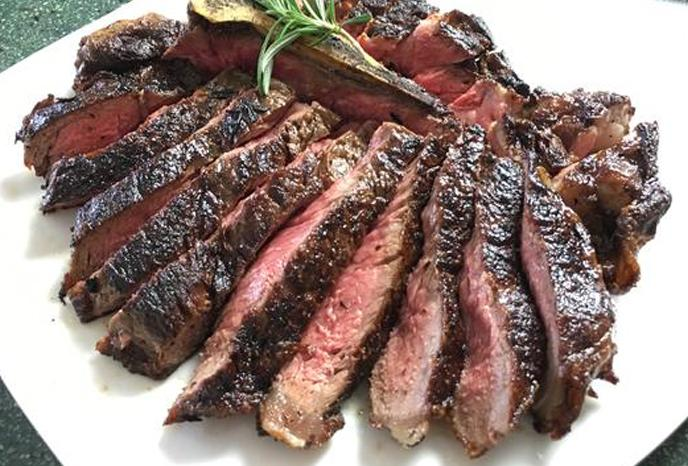

Basted Steak

This will be a recipe that will let you make a steak basted in butter.
ingredients
1 1-1/4 inch thick steak (ribye, striploin, or tbone
1 tablespoon vegetable oil
2 tablespoon unsalted butter
1 thyme or rosemary
salt and pepper to taste
Heat pan on medium heat. Pat steak dry and season both sides with salt and pepper while the pan is heating up.
When pan is hot add vegetable oil and place steak in afterwards.
Add butter into pan and allow to melt and bubble. Add herb of choice.
Let steak sear for 45 sec before flipping. Once flipped allow steak to sear for 45 sec again while basting with the melted butter.
Slice little slits into steak and check for ccolor. If Prefer color is not reached continue to baste and flip with shorter increments.